Incubator Slot Alignment

|
Note—Perform this procedure when:
|
Calculate Slot 1 Alignment
 Initialize the desired Incubator and insert an MTU into Slot 1. (Wait for the incubator to come up to temperature.
Initialize the desired Incubator and insert an MTU into Slot 1. (Wait for the incubator to come up to temperature.
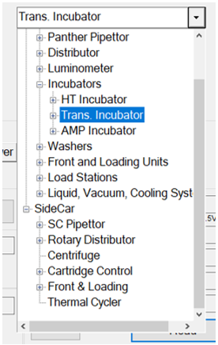
- With 4/5 of the MTU inserted, ≈ 1 mm of space should exist between the MTU and the Incubator door frame.
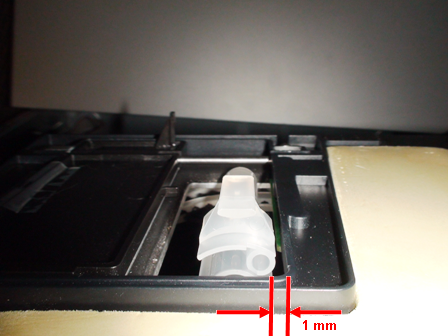
- Additionally, gently press on the left side of the MTU and verify that the MTU barely makes contact with the door frame.
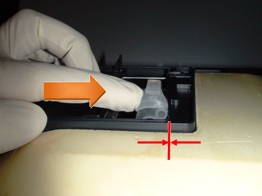
Teach Slot 1
- In the Parameter tab, select the Incubator, enter the proper Code, and press Set to enable parameter/teaching adjustment.
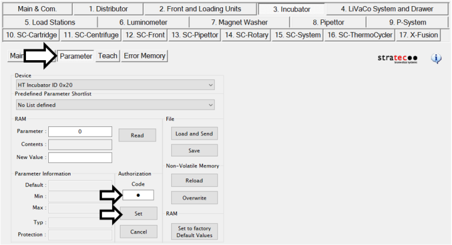
- In the Teach tab, select the appropriate device and verify the Incubator is at the Slot 1 position.
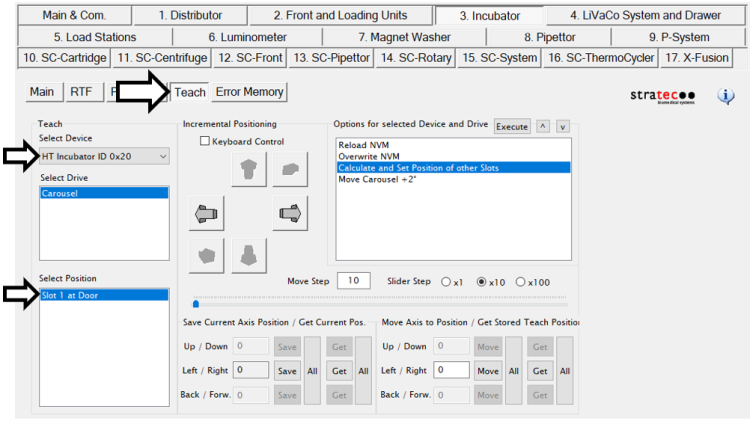
- Press Get All to refresh the Left/Right value. It should output a value between 175–225.
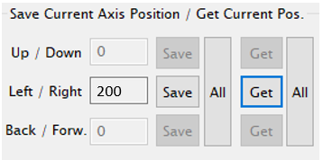
- Determine the direction in which to move the slot position.
- Increase/decrease (by 1–10 steps) using the arrow buttons to achieve the proper MTU/door clearance as described earlier. The left arrow increases the value, but rotates the carousel clockwise; the right arrow decreases the value, but rotates the carousel counterclockwise.
Note—You must close the Incubator door before moving the carousel to avoid causing an Incubator Door Open error. 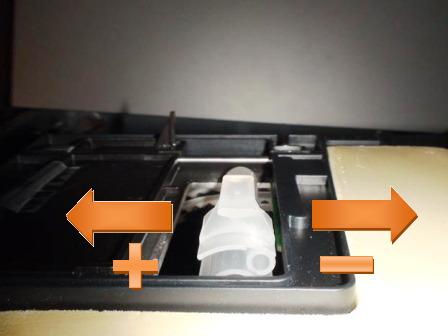
- Repeat adjustments to the carousel to achieve the proper clearances stated above.
Storing the New Teach Position
- Once the MTU/door clearance has been verified, press Get All and then Save All to store the new position.
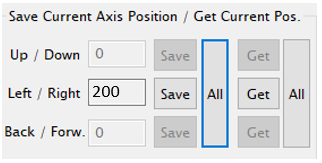
- Double-click Calculate and Set Position of other Slots to calculate and set the positions of the other Incubator slots (i.e., Slots 2–17).
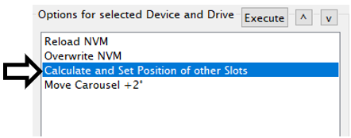
- Press Yes at both prompts.
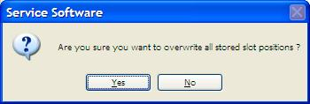
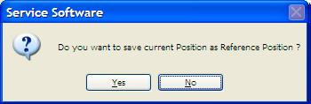
- Double-click Overwrite NVM followed by OK to store the position to the non-volatile memory (NVM).
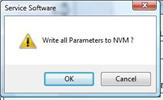
Distributor Auto-Teach
- With the new Slot 1 position, perform the auto-teach procedure at the specified Incubator to complete the alignment procedure.

WARNING—The Distributor auto-teach procedure must be performed for the Incubator in order to properly sync the Incubator Slot 1 with the Distributor. - If this procedure was completed on an Amplification Incubator with RTFs, perform the RTF Alignment procedure.
- Perform an Operational Qualification procedure.
 button at the top of the page to send feedback, comments, or change requests.
button at the top of the page to send feedback, comments, or change requests.